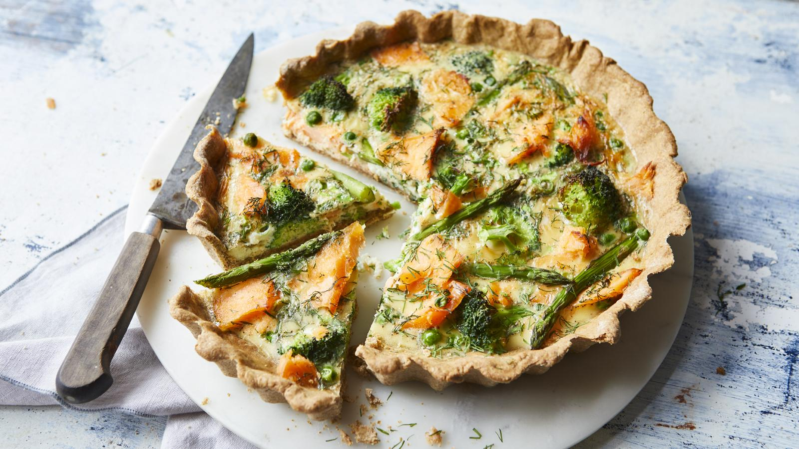

Salmon and broccoli quiche
Salmon is a great fish to use in a quiche due to its relatively high fat content so you don’t need to worry about
overcooking it. The wholemeal crust provides a lovely nutty taste and slight crunch.
Each serving provides 363 kcal, 26g protein, 27g carbohydrate, 16g fat, 6g fibre
